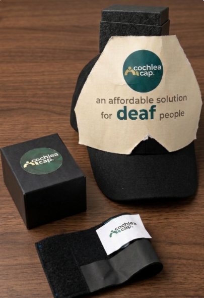
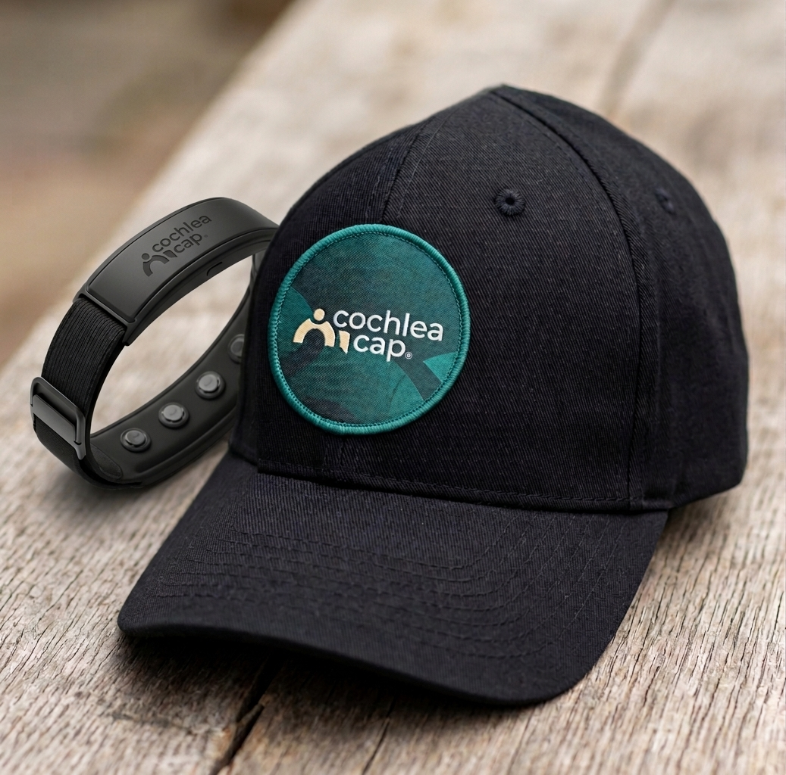

Live Sound Dashboard & SOS
A companion mobile interface showing real-time street decibel curves, device battery health, and emergency SOS broadcast with GPS coordinates mapped directly to verified emergency contacts.
Cochlea Cap detects sound and identifies its direction through haptic feedback — giving 360° situational awareness without expensive surgery.
people worldwide are deaf or severely hard of hearing
minimum cost of a cochlear implant, plus highly invasive neurosurgery most cannot access
of deaf individuals belong to low and middle-income families who cannot afford these procedures
Cochlear implants are not just expensive — they require invasive neurosurgery and rigid eligibility criteria that exclude millions. For the majority of the world's deaf population, the barrier isn't medical. It is financial.
Cochlea Cap approaches the challenge differently. Rather than attempting invasive sound restoration, it extends what deaf individuals already excel at — forward-focused visual awareness and lip-reading — into full 360° situational coverage through intuitive haptic pulses on the wrist.

Microphones built into the Cochlea Cap continuously monitor ambient soundscapes. When audio exceeds the 95 dB alert threshold — the level of an approaching vehicle horn or siren — the system activates instantly.
An onboard high-speed microcontroller analyzes the time-of-arrival difference between microphone capsules to calculate precisely which quadrant — front, back, left, or right — the sound originated from.
The corresponding vibration actuator on the wristband pulses with a distinct, unmistakable waveform. Four dedicated motors ensure the user immediately knows the exact hazard direction without turning their head.
Deaf individuals are already expert forward observers and lip-readers. Cochlea Cap expands that situational confidence behind them and to both sides — complete 360° coverage for autonomous urban navigation.
Street-level field measurements recorded ambient noise ranging from 50 dB to 85 dB — a continuous baseline of dense urban commotion.
Vehicles traveling at elevated speeds consistently emit significantly higher decibel horns. Heavy transport trucks consistently outpaced local buses in both approach velocity and horn magnitude.
By calibrating the trigger threshold to 95 dB, the device activates exclusively for approaching high-risk vehicular hazards — filtering out routine sub-85 dB crowd babble with zero false positives.

Cochlea Cap 4.0
Cochlea Cap 5.0Three upcoming milestones, each expanding the sensory intelligence and protective reach of our platform.
A companion mobile interface showing real-time street decibel curves, device battery health, and emergency SOS broadcast with GPS coordinates mapped directly to verified emergency contacts.
High-fidelity INMP441 MEMS microphone arrays coupled with TinyML on-device classification models to categorize hazards — intelligently discerning emergency ambulances from regular horns.
Compact solid-state LiDAR sensors scanning pedestrian paths in real-time, streaming a 3D spatial obstacle map to the mobile portal — bringing autonomous vehicle perception to everyday safety.
Cochlea Cap is engineered in Dhaka, tested on some of the world's most demanding streets, and designed specifically for the communities who need it most. No surgical risks. No unaffordable price tags. Just uncompromised safety and independent mobility.